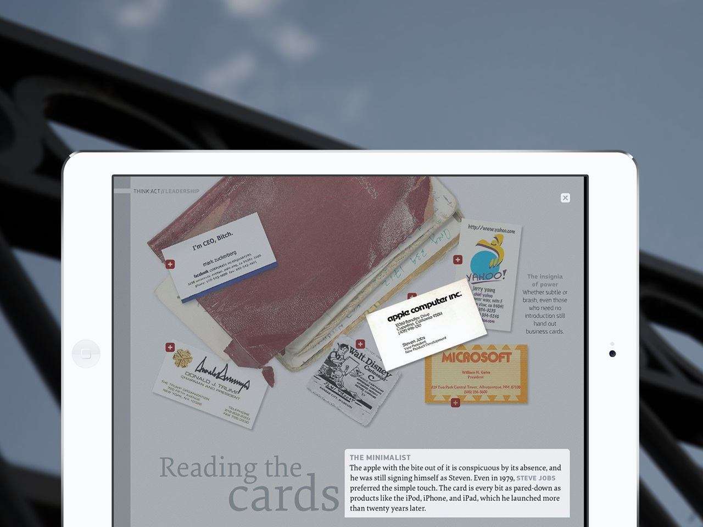
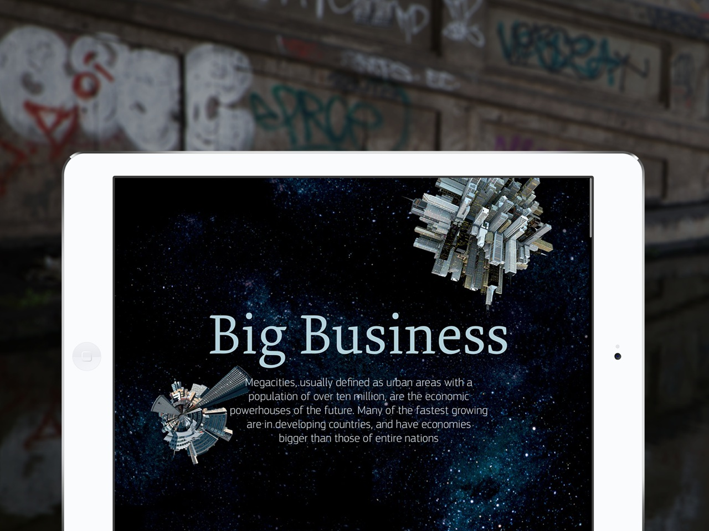

The digital editions are developed with Adobe Digital Publishing Suite and HTML5. Together with TwoType and Axel Springer Neue Geschäftsfelder we are supporting the conception and developement of the digital magazine since the 18th issue. We are responsible for the smooth production of the folios and the development of the HTML contents.
As a special feature the 18th edition had a flying boomerang on the cover, that could be controlled with the gyro sensors of the iPad. On a regularly basis think:act uses every feature of the Adobe Digital Publishing Suite. Wherever those feature involve limitations, we extend the functionality with HTML5 – for example for interactive contact cards, animations or mini applications.
Download think:act for iPad or for Android tablets.
{% include badge.html store="apple" %} {% include badge.html store="google" %}
{% for cta in site.ctas %} {% if cta.lang == page.lang %} {% if cta.id == 'about-project' %} {% include cta-plain.html %} {% endif %} {% endif %} {% endfor %}